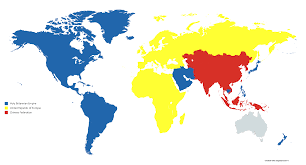
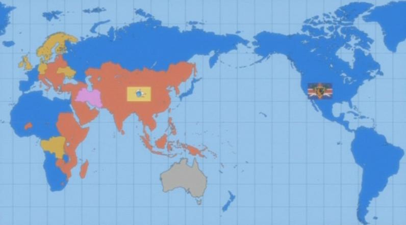

Nações do Anime:
Primeira Temporada:

- Sacro Império Britaniano: Compreende os continentes da América do Norte e do Sul, a Nova Zelândia e as ilhas do Pacífico, a capital é Pendragon;
- Europa Unida: Compreende todo o continente Europeu, o território da Rússia Europeia, além das suas colônias africanas, com capital em Paris (colapsou na segunda temporada);
- Federação Chinesa: Compreende o território da China, Mongólia, Coreia, Sudeste Asiatico, Asia Central, Índia e Indonésia, a capital é Luoyang;
- Japão: Compreende o atual território do Japão, antes da invasão britaniana, agora no exílio, antiga capital era Tóquio;
- Federação do Oriente Médio: Compreede o território da Arábia, Irã e Turquia, antes da invasão britaniana, agora no exílio;
- Austrália.
Segunda Temporada:

- Sacro Império Britaniano: Compreende o seu antigo território, além da Europa Ocidental, África Ocidental e Oriente Médio
- Federação das Nações Unidas: Compreende os territórios sobreviventes da Europa Unida, a Federação Chinesa e a África Oriental.
- Alemanha;
- Reino Unido;
- Ucrânia;
- Finlândia;
- Suécia;
- Noruega;
- Dinamarca;
- Austrsália;
- Irã;
- Congo;
- Gabão.
Voltar